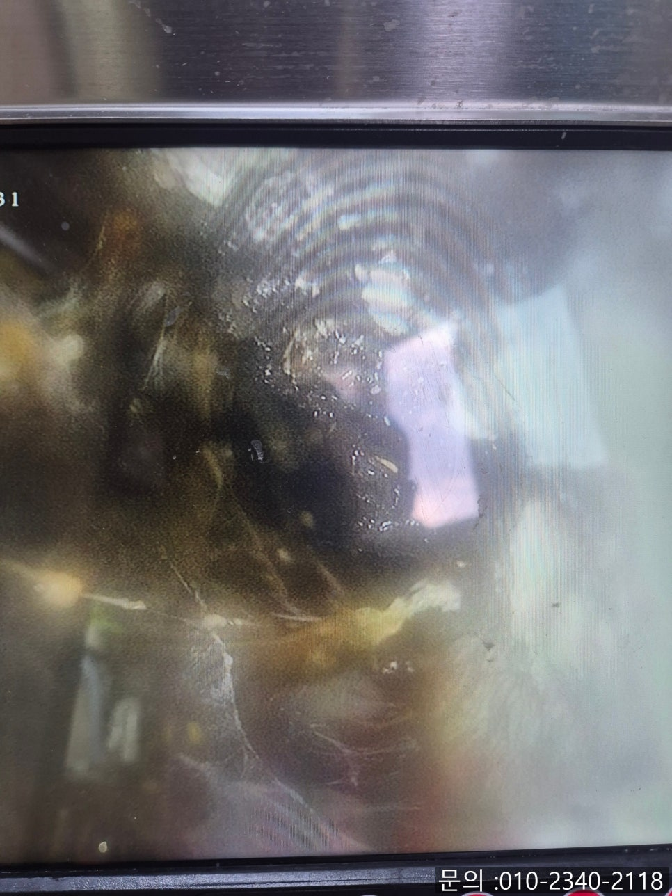
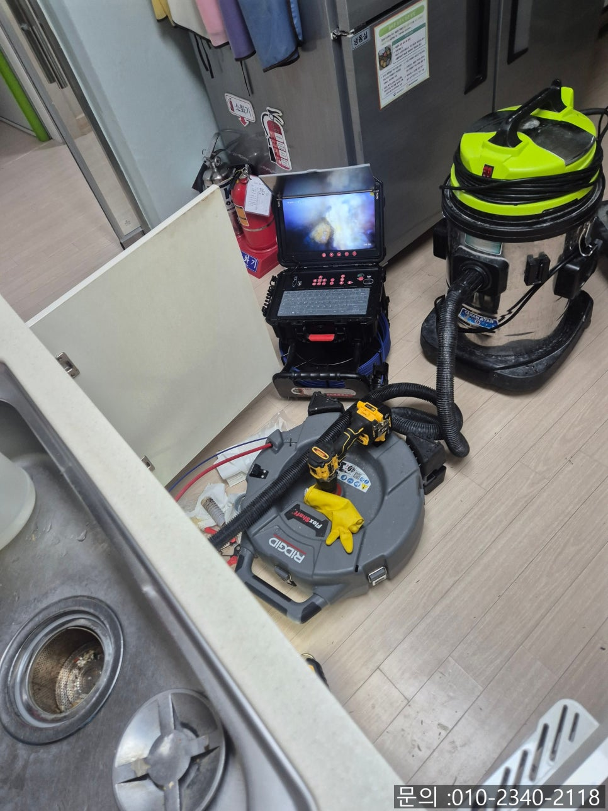
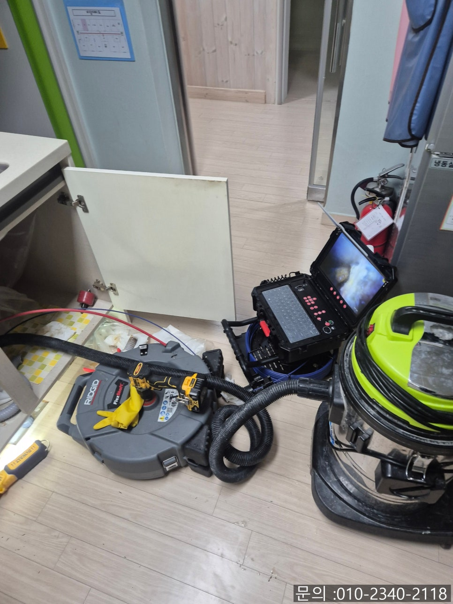
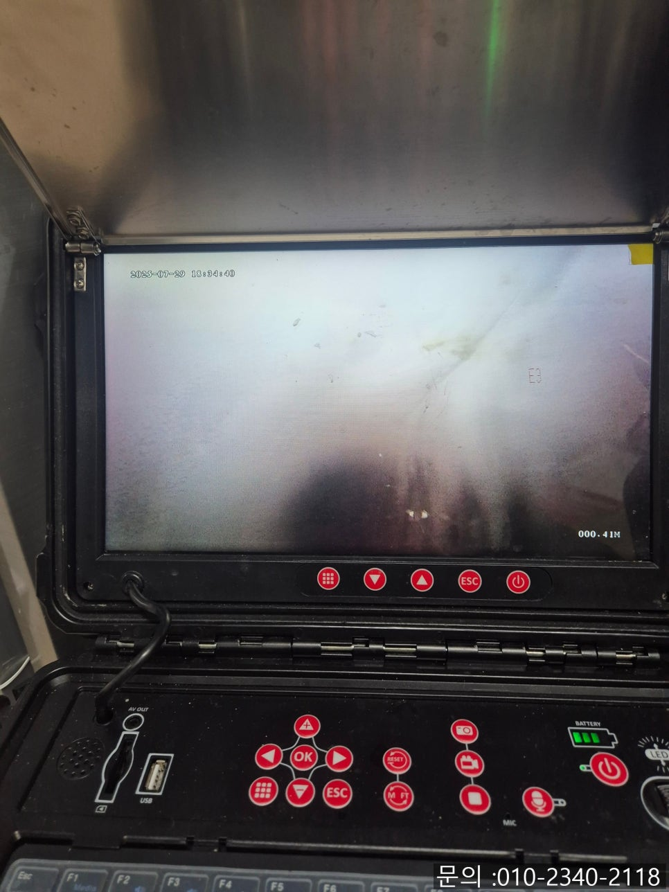
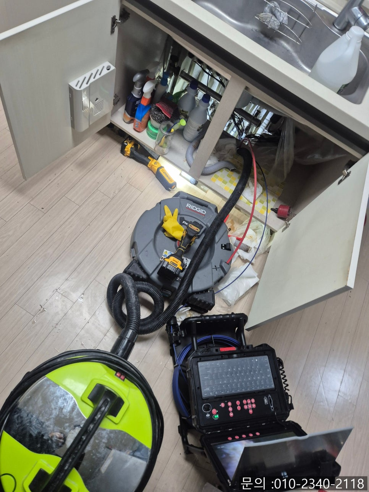

🏠 매탄동 싱크대 막힘 수원 영통동 하수구 역류할 때 뚫어주는 업체
수원 매탄동 싱크대막힘 전문 시공 후기

📋 작업 개요
- 위치: 수원 매탄동, 매탄동, 수원
- 서비스 유형: 싱크대막힘, 하수구막힘, 배관막힘, 누수수리, 역류해결, 뚫는업체, 배관청소
- 작업 일시: 2025. 8. 5. 10:00
- 업체명: 하수구수사대 (010-5615-2118)
🔍 문제 상황
안녕하세요.
수원 영통동 하수구 역류할 때 뚫어주는 업체 에스원 설비입니다.
요즘 같은 날도 덥고 습하고 기온이 높은 날씨에 하수구까지 막히게 되면 냄새는 물론 짜증지수도 폭발하게 되죠. 찜통더위보다 더 불쾌한 매탄동 싱크대 막힘 문제, 하수구 막힘 문제, 하수구가 흐르는 속도만큼 문제도 뚝딱 해결되어야 마음이 놓이게 되죠! 믿고 맡기는 에스원이 시원하게 해결해 드립니다!
에스원 설비는

🔎 원인 분석
💡 전문가 진단: 싱크대 물이 안 빠지고 고여있어서냄새가 진동을 해요.
현장에서 문제 원인을 찾고, 해결까지 책임지는 시스템으로 전문 장비를 보유하여 숙련된 인력이 책임지고 해결해 드립니다. 막힌 하수구를 무턱대로 뚫는 게 아니라, 배관 상태와 이물질 종류에 따라 장비와 작업 방식을 달리 적용하고 있답니다.
싱크대 물이 안 빠지고 고여있어서
냄새가 진동을 해요.
고객님께서 더운 여름 날씨에 싱크대가 막혔다는 문제로 다급하게 연락을 주셨어요. 불편을 겪고 계신 고객님이 신속하게 방문 요청을 해주셨기에 약속을 잡고 1시간 이내로 방문 드리게 되었어요.

🔧 작업 과정
매탄동 싱크대 막힘 현장에 도착해서 살펴보니 물이 내려가지 않고 고여 있어 악취까지 심하게 나고 있었죠. 이런 상태로 방치되면, 싱크대 하부의 연결 부위나 주방 가구로까지 누수가 발생할 수 있기 때문에 빠른 해결이 필요했어요.
곧바로 배관 내시경 카메라를 투입시켜 내부를 확인하는 작업을 가졌어요. 배관 내부에는 기름 슬러지와 음식물 찌꺼기가 층층이 쌓여 막혀 있는 상태였어요. 겉으로 보이는 모습은 단순히 막힌 것처럼 보일지라도 내부는 복합적인 이물질로 가득 차 있는 경우가 많이 있습니다.
고객님께 상황을 상세하게 안내해 드린 후, 수원 영통동 하수구 역류할 때 뚫어주는 업체 에스원 설비는 플렉스 샤프트 장비를 사용하여 청소 작업을 진행하기로 결정하였어요.
배수관 벽면에 눌어붙은 기름때와 각종 이물질을 마치 긁어내듯 갈아내고 진득하게 엉겨 붙은 찌꺼기들을 하나하나 하나 파내기 시작했어요. 이 순간이 속이 제일 시원해지는 시간입니다.
갈아진 이물질들은 석션기를 이용하여 흡입해내주면서 다시 막히는 일을 예방해 주었어요.
단단하게 굳어 있던 슬러지와 이물질들이 쿰쿰한 악취를 풍기며 석션기로 하나둘 흡입되었어요. 이처럼 오랜 시간 동안 배관 벽면에 겹겹이 쌓인 찌꺼기들이 결국 물 흐름을 막는 주된 원인이었던 것이죠.
매탄동 싱크대 막힘 청소를 마치고 물이 시원하게 빠지는 모습을 함께 확인하였어요. 깨끗해진 배관 내부도 내시경으로 다시 점검해 드렸지요.


✅ 작업 완료
기름때와 음식물 찌꺼기가 복합적으로 쌓여 있거나, 누수 가능성까지 있는 예민한 작업 현장이라면 단순하게 뚫는 장비로는 오히려 문제를 더 키울 수 있어요. 하수구 막힘, 싱크대 막힘은 확실하게 원인을 파악하고 깔끔하게 해결하는 에스원 설비와 함께 하세요!
경기도 수원시 영통구 봉영로 1612 7층 710-A19호



⚠️ 베란다 누수 및 방수 관리 방법
- ✅ 비가 많이 올 때 창틀 주변이나 아래층 천장에 얼룩이 생기는지 정기적으로 확인해 보세요.
- ✅ 우수관 주변 실리콘 마감이 들뜨거나 깨진 틈새가 있는지 손상 여부를 수시로 체크하세요.
- ✅ 베란다 바닥 타일의 줄눈(메지)이 소실되면 그 틈으로 물이 침투하여 누수가 유발됩니다.
- ✅ 누수 의심 증상 발견 시 방치하면 아래층 손실이 커지므로 즉시 전문가의 진단을 받으십시오.
💡 핵심 정리
- 확실한 장비 작업(내시경 점검 및 샤프트 스케일링)으로 원인을 뿌리 뽑습니다.
- 작업 후 1년 이내에 동일한 부위 재발 시 100% 무상 A/S 서비스를 보장합니다.
- 서울 · 경기 · 인천 전 지역에 24시간 언제든 긴급 출동할 수 있도록 항시 대기 중입니다.
❓ 자주 묻는 질문 (FAQ)
🚨 수원 매탄동 싱크대막힘 문제로 고민이신가요?
정확한 원인 진단과 확실한 시공으로 재발 없는 해결을 약속드립니다.
24시간 긴급 출동 | 서울 · 경기 · 인천 전지역 | 1년 내 재발 시 무상 A/S